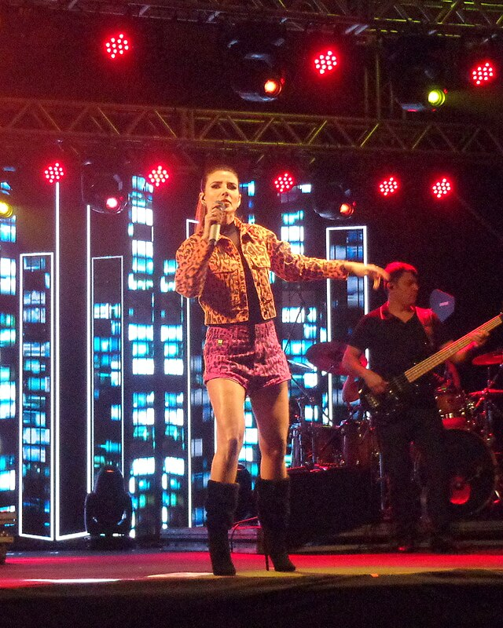

Boas-vindas a
 Quero conhecer! (1).jpg "Henrique e Juliano,CC BY 3.0")

O que foi a Tropicália?
A música sertaneja, um gênero musical popular no Brasil, originou-se das tradições musicais do interior do país, especialmente das modas de viola e do estilo de vida caipira. A pesquisadora Letras.mus.br diz que o gênero evoluiu ao longo do tempo, passando por diversas fases e subgêneros, como o sertanejo raiz, o romântico e o universitário. Origens e Evolução Modas de Viola: A música sertaneja tem raízes nas modas de viola, práticas musicais populares no Brasil colonial, onde pessoas se reuniam para cantar e contar histórias em rodas.Cornélio Pires:Em 1929, o escritor e pesquisador Cornélio Pires começou a divulgar através da música e apresentações teatrais, marcando o início da classificação do gênero com música sertaneja. Fases: O gênero passou por fases como a música caipira/sertaneja raiz, a modernização com a inclusão de instrumentos como guitarras elétricas e influências de baladas, o sertanejo romântico e, mais recentemente, o sertanejo universitário, que trouxe novos elementos e popularidade. Sertanejo Universitário: Este subgênero, surgido nos anos 2000, trouxe letras mais leves e dançantes, com temáticas mais voltadas para o público jovem universitário. Características:Instrumentos:A viola caipira é um instrumento icônico na música sertaneja, juntamente com o violão e, em algumas fases, a sanfona e o berrante. Temas: As letras abordam temas como a vida no campo, o amor, a saudade, as dificuldades e as experiências do cotidiano rural e urbano. Popularidade: A música sertaneja é um dos gêneros mais populares no Brasil, especialmente nas regiões Sul, Sudeste e Centro-Oeste, e tem grande presença nas rádios e plataformas de música online
Galeria